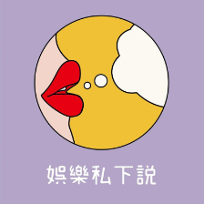

節目娛樂影視
E07｜誰羞羞臉？你才修修臉！藝人不能說破的整形文化
主持人｜鏡文學 譯者｜某某某
節目總長｜230 分 50 秒 開播日期｜2020-05-08
#標籤文字
#標籤文字
#標籤文字
#標籤文字
#標籤文字

張心哲
4.5 (280)
追蹤 202｜作品 3
INFO
資訊
哈囉各位聽眾你們好？這裡是鏡好聽，歡迎收聽第五集出擊事實查核大揭密。這個節目是我們與台灣事實查核中心合作，除了每週二鎖定節目更新，按讚臉書跟追蹤instagram可以收到更多節目資訊的通知哦！
這集出擊事實查核大揭密我們邀請到的對象，他既在學校教書，同時也持續參與各種台灣新聞業的推進行動。他也是成立台灣事實查核中心，這一個台灣首個非營利第三方的事實查核組織的其中一人。
歡迎，優質新聞發展協會理事長、也在中正大學傳播學系暨電訊傳播研究所教書的胡元輝教授（問好），這集邀請胡元輝教授來跟我們談談，事實查核在台灣，以及台灣事實查核中心的前世今生？
【本周主題：Fact-check在台灣：台灣事實查核中心的前世今生】
事實查核（Fact-check）這個詞在2018年大選前後才逐漸躍然於大眾眼前，然而其實21世紀之初美國就有獨立的政治而論事實查核組織的成立，究竟在傳播學上，這個詞是何時被看見、被確立下來的？